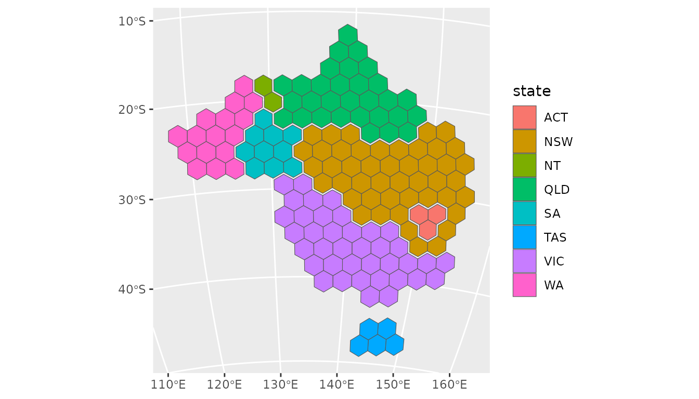
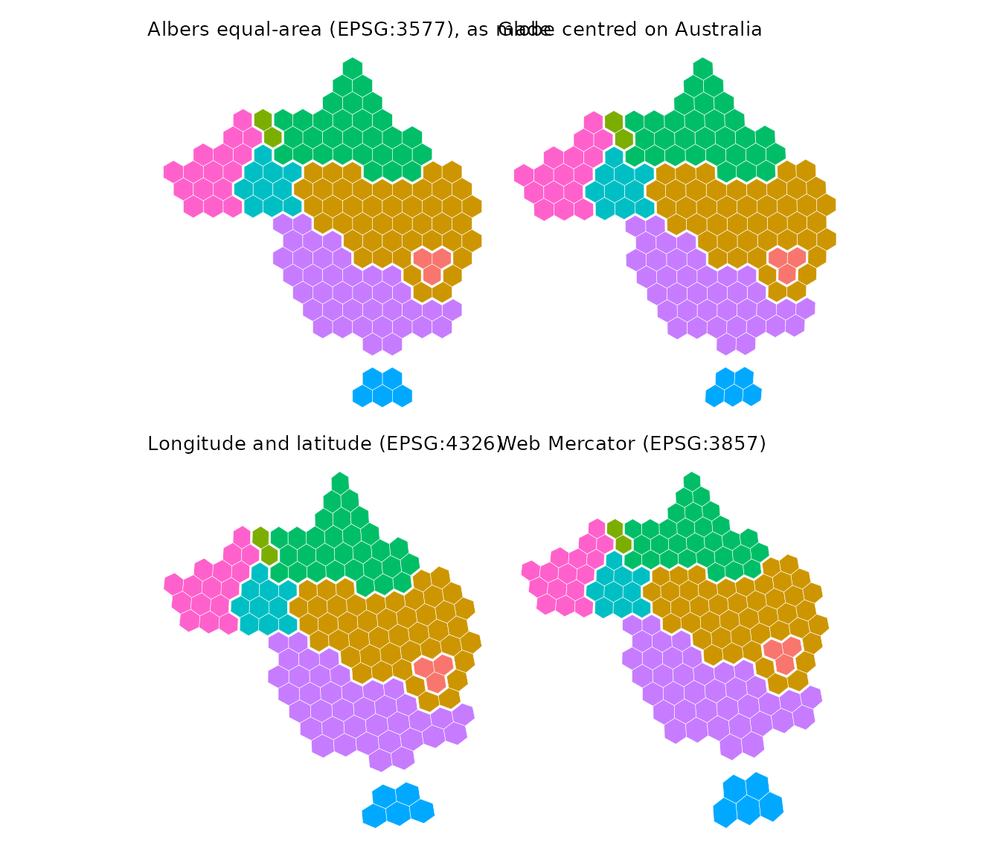
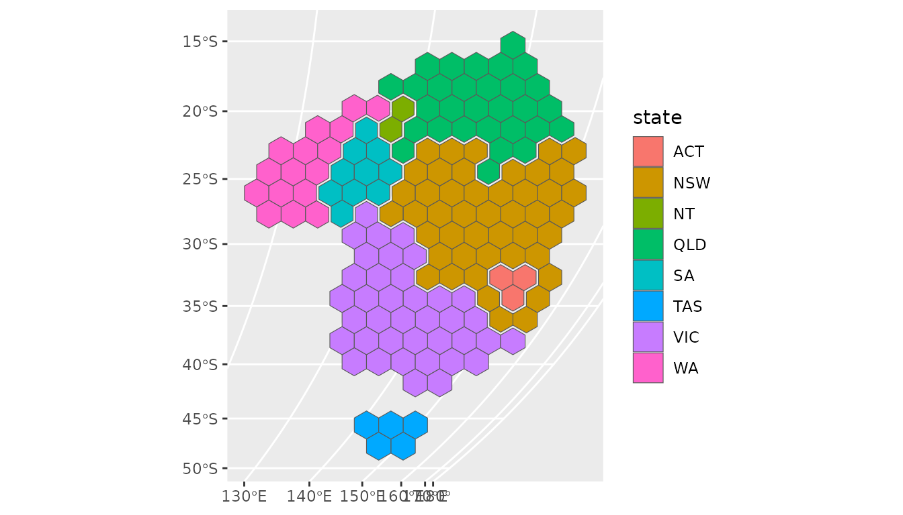
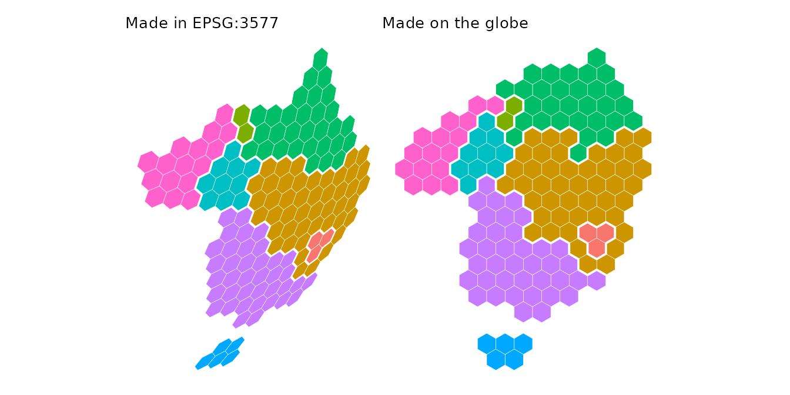

The examples use the electoral divisions of the 2025 Australian federal election included in hexmap, in longitude and latitude, with the state of each division:
ced <- aus_election_2025A hexagon map is drawn on a flat surface, but the regions it represents lie on the curved surface of the Earth. The projection that flattens the Earth decides two things about the hexagons:
- whether they look regular, with six equal sides, and
- whether they cover equal areas on the ground.
hexmap() makes regular, equally sized hexagons in the
plane of a projected coordinate reference system (CRS). This is the CRS
of the map, or the one given with crs. A map in longitude
and latitude has no plane to make hexagons in, so by default it is
projected with the Lambert azimuthal equal-area projection centred on
the map, and a message names the CRS chosen. The hexagons are ordinary
sf polygons, so they keep their location on the Earth and
can be plotted with geom_sf() in any projection. They only
look regular when plotted in the projection they were made in, and only
cover equal areas on the ground when that projection is equal-area.
Plotting in other projections
Plotting the hexagons in another projection moves each of their corners to its new position, so the hexagons stay in place but are stretched with the land beneath them. For example, on a globe centred on Australia:

The same hexagons in some other projections:

A globe centred on Australia is close to the Albers projection across the continent, so the hexagons are barely changed. Longitude and latitude shears them, and Web Mercator keeps their shape but enlarges them towards the south.
Regular hexagons on a globe
On a globe centred away from Australia, the continent is foreshortened towards the horizon, and so are hexagons made in the Albers projection. To have regular hexagons on the plotted map, make them in the projection it will be plotted in.
globe <- "+proj=ortho +lat_0=0 +lon_0=90"
globe_hex <- hexmap(ced, group = state, crs = globe)
ggplot(globe_hex) +
geom_sf(aes(fill = state))
Compared with the Albers hexagons plotted on the same globe:

The hexagons made on the globe are regular, and tile the outline of
Australia as it appears from this viewpoint. The hexagon size,
island_gap, group_gap and the group layouts
are all measured in the plane of this projection.
An orthographic globe only shows one hemisphere, so centre it well away from the region. Hexagons on the edge of a region near the horizon may extend past it, where they have no location on the Earth.
Equally sized hexagons
The hexagons are equally sized in the plane they are made in. They also cover equal areas on the ground when that projection is equal-area. Making and plotting the hexagons in an equal-area projection gives hexagons that look regular and represent equal areas, for example:
- an equal-area conic projection for a country or state, such as the Australian Albers (EPSG:3577) or the conterminous United States Albers (EPSG:5070),
- the Lambert azimuthal equal-area projection centred on the region
(
"+proj=laea +lat_0=... +lon_0=..."), which looks like a globe near its centre and is the default for maps in longitude and latitude, - Equal Earth (
"+proj=eqearth") or Mollweide ("+proj=moll") for the whole world.
The orthographic globe is not equal-area, but is close to it near its centre. Web Mercator is far from equal-area. Over Australia, its hexagons cover up to 1.75 times as much ground in the tropical north as in Tasmania.